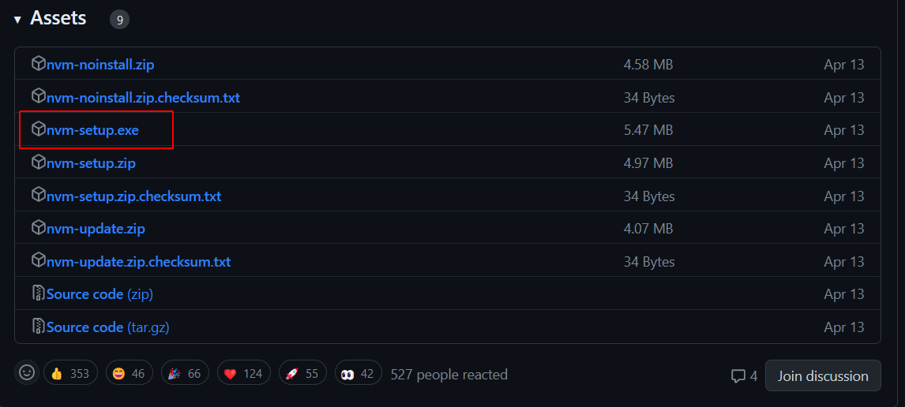
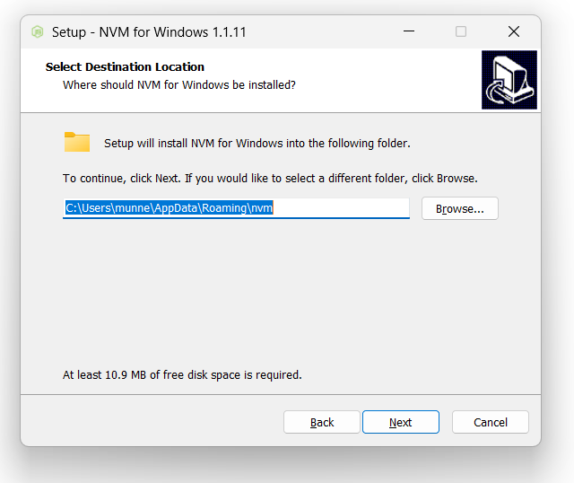
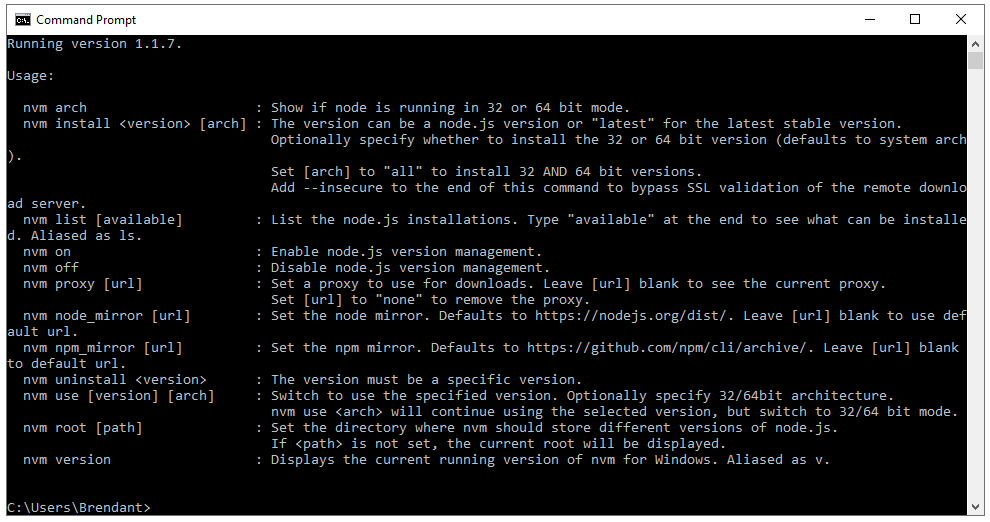
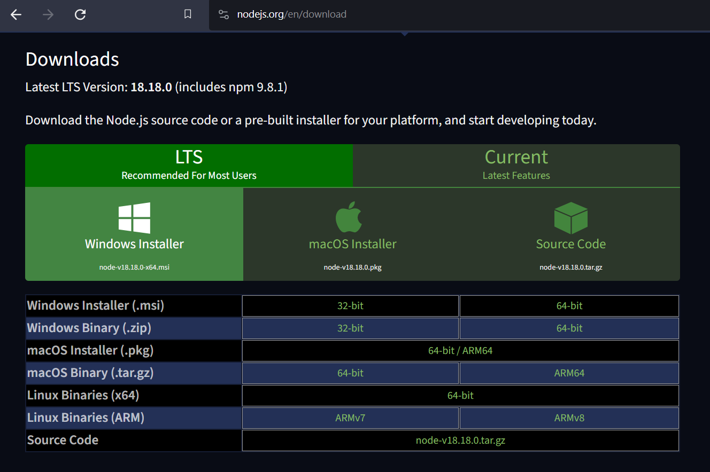
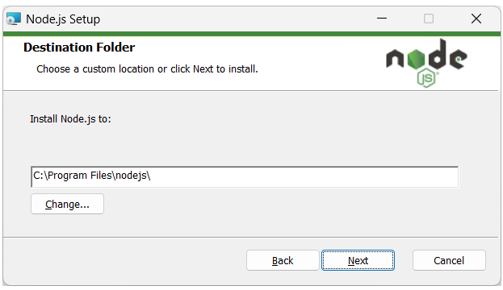
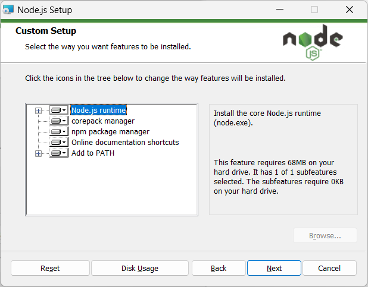
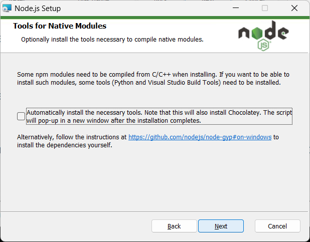
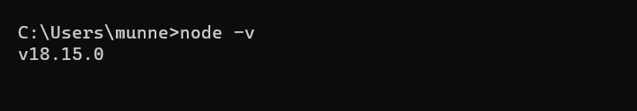
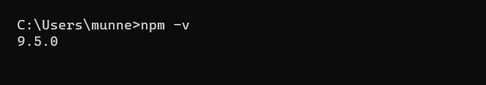

Learning Goals
At the end of this Tutorial, you will be able to:
- Install the Node Version Manager (NVM).
- Install Node.js and the Node Package Manager (NPM).
About the Node Version Manager (NVM)
When working with projects based on Node.js, it can be useful to have multiple versions installed on your system at any one time.
As the name suggests, the Node Version Manager (NVM) enables you to switch between and work with different Node versions.
The NVM provides a CLI (command-line interface) where, with a single command, you can:
- Install a particular Node.js version
- Set a default Node.js version, and
- Switch between versions as required
- Safely upgrade as new versions of Node.js are released.
Installing NVM
How you install NVM depends on your operating system:
- macOS and Linux: These two systems are directly supported by NVM.
- Windows: You will need a related (but separate and independent) project called nvm-windows to work with multiple Node.js versions.
The basic NVM commands are very similar across all three operating systems.
Installing NVM on Windows
Here are the steps for installing NVM on Microsoft Windows:
- Uninstall any existing versions of Node.js or NVM.
This requires deleting any existing Node.js installation folders (such as
C:\Program Files\nodejs), and removing the existing NPM install folder (such asC:\Users\<user>\AppData\Roaming\npm). - Open the GitHub windows-nvm repository in your web browser.
- Scroll down to the Assets section and click the nvm-setup.exe file. 
- Download and run this file. The installation wizard will walk you through the setup steps. 
- To verify Node Version Manager has been installed correctly, open a Command Prompt window and type
nvm. You should see a screen similar to that below. 
Installing NVM on macOS/Linux
With macOS and Linux, removing previous Node Package Manager and Node.js installations is optional.
Before installing, visit the project’s home page to discover the latest version number. Currently, this is v0.39.5.
On your terminal, you can use cURL or Wget as follows.
With cURL:
curl -o- https://raw.githubusercontent.com/creationix/nvm/v0.39.5/install.sh | bash Alternatively, with Wget:
wget -qO- https://raw.githubusercontent.com/creationix/nvm/v0.39.5/install.sh | bash Running either of the above commands downloads a script that clones the Node Package Manager to a ~/.nvm directory on your device.
The script should also add the NVM configuration to your profile. If you're using zsh, that would be ~/.zshrc. If you're using bash, that would be ~/.bash_profile... or some other profile.
If the install script doesn't automatically add NVM configuration, you can add it yourself to your profile file as follows:
export NVM_DIR="$([ -z "${XDG_CONFIG_HOME-}" ] && printf %s "${HOME}/.nvm" || printf %s "${XDG_CONFIG_HOME}/nvm")"
[ -s "$NVM_DIR/nvm.sh" ] && \. "$NVM_DIR/nvm.sh"This makes the nvm command available from anywhere in your terminal.
With your profile configuration updated, reload the configuration as follows:
source ~/.bashrcReload (or restart) your terminal and the Node Package Manager is ready for you to use.
You can confirm that NVM is installed correctly by running:
nvm -vInstalling Node.js
With NVM installed, you can now install, uninstall, and switch between different Node versions in your Windows, Linux, or Mac device. For example, this command would install the latest version of Node.js:
nvm install latestAnd this would install the X.Y.Z Node.js version:
nvm install vX.Y.ZHowever, this is NOT recommended practice. To install a stable, production-ready version of Node.js that is least likely to generate errors, it is better to use the provided installers for your operating system. See below.
Installing Node.js on Windows or macOS
Follow these steps.
- Go to the official Node.js downloads web page, click the LTS (Long Term Support) tab, and then choose your operating system. 
- Run the downloaded installer file and follow the installation wizard's instructions. You will probably want to accept the default location.  You will be prompted to select which components you want to install. Again, you will probably want to accept the defaults.  You typically will not need to install further tools. So you can leave this option at its default value of unchecked.  Finally, click the Install button and then click Finish.
That's it.
To verify the installation, open a Command Prompt and enter the following:
node -vYour system should display a screen similar to that below.
About Node Package Manager (NPM)
NPM is included with Node.js installation. You can verify NPM is installed by entering the following command in a terminal or command prompt:
npm -vYou should see a screen like that below.
Node Package Manager is both:
- An online repository for open-source Node.js packages, and
- A command line tool that installs, updates or uninstalls these Node.js packages.
To update to the latest version of NPM, enter the following:
npm update -g